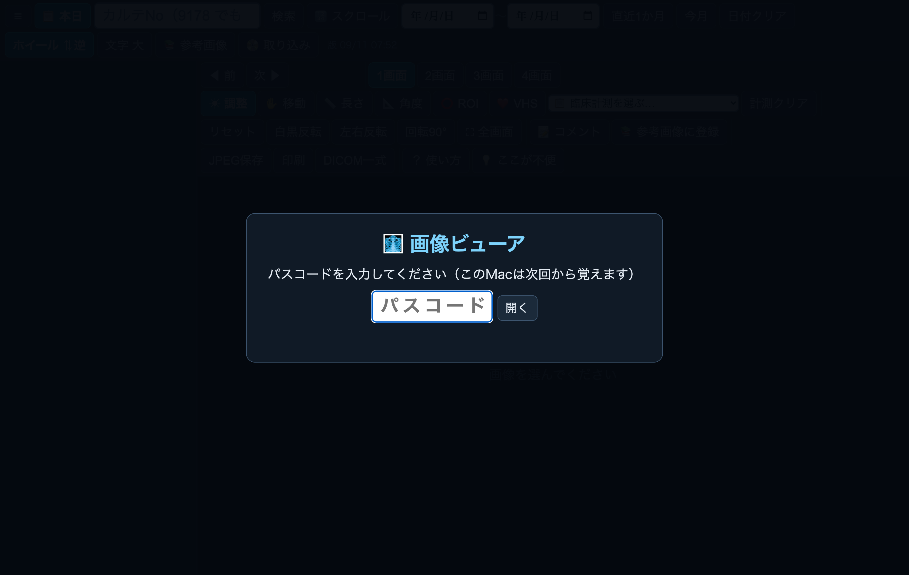
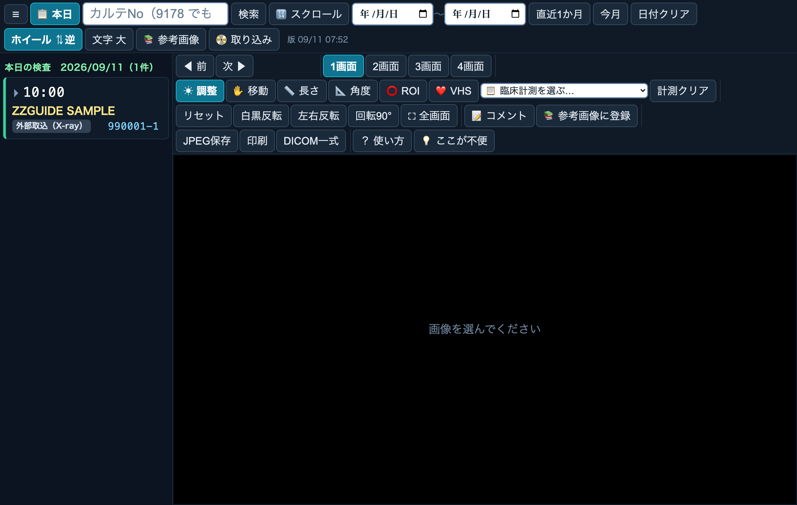
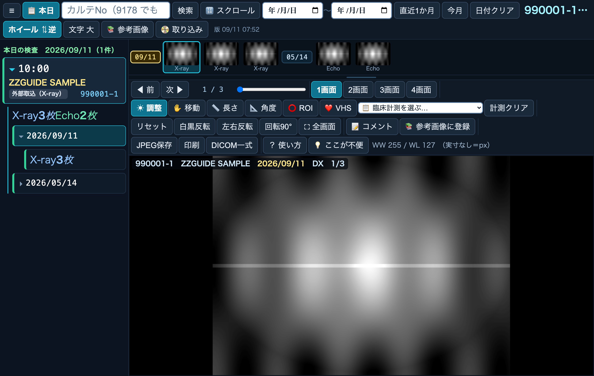
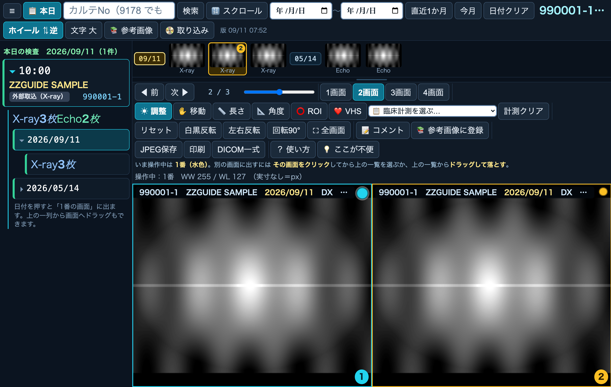
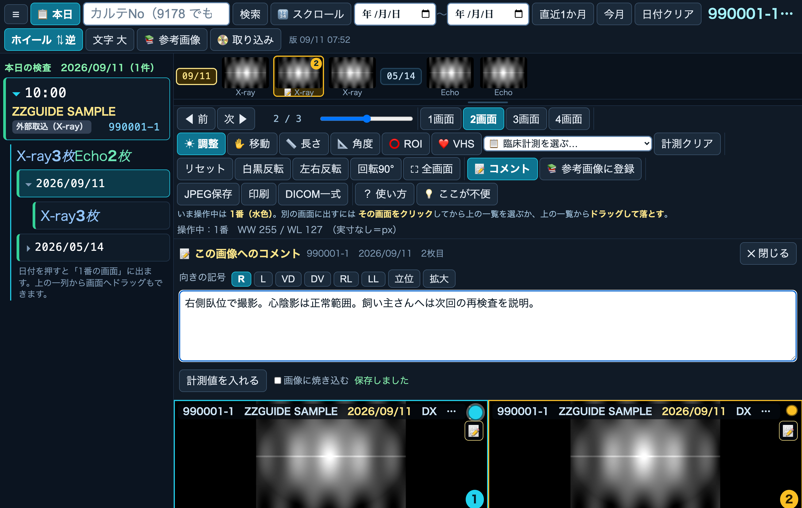
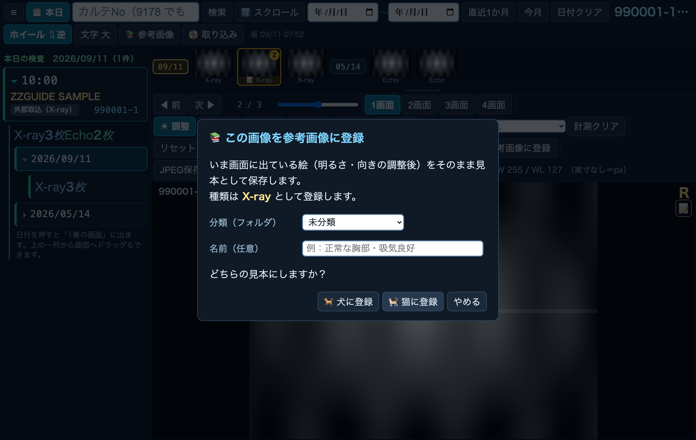
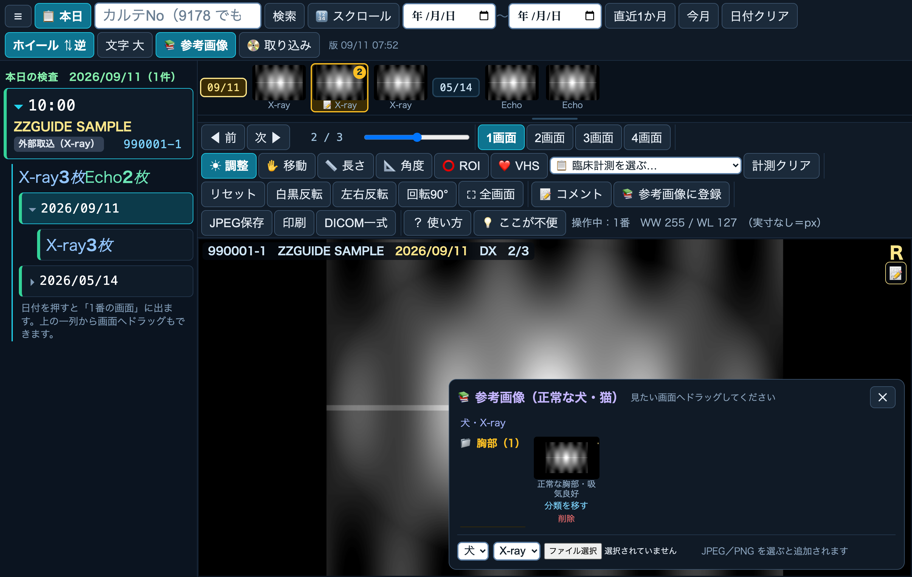
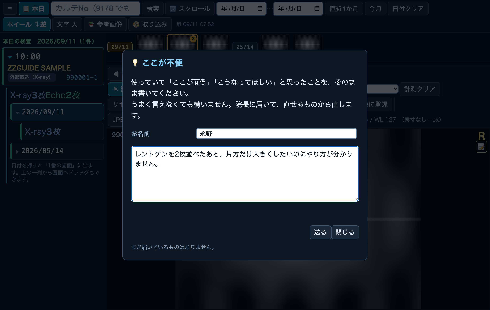

画像ビューア 使用ガイド
← ガイド一覧へ
診察室・獣医師／スタッフ向け ｜ 2026年9月11日版 ｜ 荻窪ツイン動物病院
30秒まとめ
診察室のMacで
レントゲン・エコー・CT・MRIを見るためのアプリです。OsiriX の置き換えで、ブラウザで開くだけで使えます。
今日撮った検査が自動で一覧に出るので、患者さんを探さなくてもそのまま開けます。過去の検査は
カルテNoで自動的にひも付いているので、日付を押せば去年のレントゲンとも並べて見比べられます。
獣医師・スタッフが使う画面です
緑 = 自動（システム）
🔒 この画面はどこを撮っても飼い主さん・ペットの名前が写ります。画面を院外の人に見せたり、写真に撮って外に送ったりしないでください。
（このガイドの画面写真は、そのために架空の見本データで撮っています。実際の患者さんではありません。）
1. アプリを開く
パスコード

▲ 最初の1回だけ、パスコードを入れます
パスコードは院内で共有しているものを入れてください（分からなければ院長へ）。一度入れると、そのMacは次回から覚えます。
💡 右上の「版 09/11 07:52」は、いま見ている画面がいつ更新されたものかを表します。「直したはずなのに変わっていない」と思ったときは、ここの日時を院長に伝えてください。
2. 基本の流れ
① 撮影するエコー・レントゲンで撮ると、画像は自動でサーバへ送られます。
▼
② 「本日」の一覧に自動で出る3つの診察室すべてに、20秒以内に出ます。探す必要はありません。
▼
③ 患者を押す → 上の一列から画像を選ぶ過去の検査も同じ一列に並びます。
▼
④ 見る・見比べる・測る・コメントを残す
▼
⑤ 必要なら外に出すJPEG保存／印刷／DICOM一式。
3. 画像を出す
本日の検査（開くと最初に出る画面）

▲ 今日撮った検査が新しい順に並びます
- 20秒ごとに自動で増えます。撮ったらそのまま待っていれば出ます（更新ボタンは要りません）。
- カルテNoが機器に入力されていなかった検査は⚠印が付きます。誰の画像か分かるように、機器側で入れてください。
- 別の患者を見たあとで戻りたいときは、左上の📋 本日を押します。
患者を探す
| やりたいこと | やり方 |
|---|
| カルテNoで探す | 上の枠に番号を入れて検索。枝番は要りません（9178 と入れれば 9178-1・9178-2 も出ます）。 |
| 名前で探す | 同じ枠に飼い主さん・ペットの名前を入れて検索。
⚠ いまはローマ字で登録されている子だけ引けます（例 hasegawa）。カタカナ・漢字の名前では出ません。カルテNoで探してください。 |
| 日付で絞る | 直近1か月／今月のボタン、または日付の枠で期間を指定。解除は日付クリア。 |
| 日付が入力しにくい | 🔢 スクロールを押すと、年・月・日を選ぶ方式に切り替わります（古いMacで日付の枠が出ないとき用）。 |
患者を開く

▲ 押した患者の中身が、その行の下にそのまま開きます（一覧は消えません）
- 左の一覧で患者を押すと、その下に検査が日付ごとに折りたたまれて出ます。日付を押すと開閉します。
- 日付の中の「X-ray 3枚」のような行を押すと、その種類の1枚目が画面に出ます。
- もう一度患者を押すと閉じます。
🔗 過去の検査は自動でひも付きます。同じカルテNoで撮られた画像は、何年前のものでも同じ患者の下に並びます。CD で取り込んだ他院の画像も、カルテNoを割り当てれば同じ場所に並びます。
👨👩👧 同じ飼い主さんの別の子（枝番違い）は、混ぜずに別枠で「別の子の画像です」と出ます。取り違えを防ぐためです。
上の一列（画像一覧）
- その患者の画像が、日付の区切り付きで全部並びます。だから違う日どうしを見比べられます。
- 左端の日付のラベル（09/11 など）を押すと、その日の先頭までスクロールします。
- 一覧と画像の間の線を上下にドラッグすると、サムネイルを大きく／小さくできます。
- エコーは撮影時に入れた臓器名（L kidney など）がサムネの下に出ます。
4. 見る・並べて見比べる
| 操作 | できること |
|---|
| 左ドラッグ | 左右＝コントラスト／上下＝明るさ（既定の「☀ 調整」のとき） |
| ホイール | 拡大・縮小。向きが逆なら上の「ホイール ⇅」で入れ替えられます |
| 右ドラッグ・中ドラッグ | 画像を動かす（「✋ 移動」でも同じ） |
| ダブルクリック | 全画面。Esc で戻ります |
| ← → | 次の画像・次の断面へ（Shift＋ホイールでも同じ） |
| ☰（左上） | 左の一覧を隠して、画像を大きく見る |
| 文字 大 | 文字の大きさを変える（Macごとに覚えます） |
1〜4画面に分けて見比べる

▲ 2画面。枠の色と番号が、上の一覧・画面の中の丸と揃っています
- 1画面〜4画面のボタンで分けます（1〜4 キーでも）。拡大もコントラストも計測も、画面ごとに別々です。
- 水色の枠が「いま操作している画面」です。画面の中と、上の一覧のサムネにも同じ色の丸・番号が付きます。
- 別の画面に出したいときは ①その画面をクリックしてから上の一覧を選ぶ、または ②上の一覧から画面へドラッグして落とす。
📄 印刷は「並べたまま」出ます。2画面で見比べている状態で印刷すると、その2枚が横に並んで紙になります。
5. 動画（エコーのクリップ）
コマ数が複数ある画像を選ぶと、下に再生の操作が出ます。
| ボタン | 意味 |
|---|
| ▶ 再生 / ■ 停止 | 再生・停止。先に全コマを読み込むので、カクつかずに流れます。 |
| 🔁 繰り返す | 最後まで行ったら最初に戻ります（既定は繰り返す）。押すと1回だけ再生に変わります。 |
| つまみ | 好きなコマまで送る。ホイールでも1コマずつ動きます。 |
👍 「◀ 前 / 次 ▶」の位置は動きません。動画の操作が出てもボタンがずれないようにしてあるので、押しっぱなしで次々送れます。
6. 測る
| 道具 | 使い方・出るもの |
|---|
| 📏 長さ | 2点をクリック。実寸（mm・cm）で出ます。実寸の情報が画像に無いときは px と明記されます。 |
| 📐 角度 | 3点（端 → 頂点 → 端）をクリック。 |
| ⭕ ROI | 範囲を囲むと、その中の平均CT値（HU）が出ます（CT向け）。 |
| ❤️ VHS | 心臓の長軸2点・短軸2点 → T4前縁 → 椎骨の境目を順にクリック。手で測るのと同じ考え方で椎骨何個ぶんかを計算します（目安：犬 8.5〜10.6／猫 6.7〜8.1）。 |
| 臨床計測を選ぶ… | よく使う計測が26項目入っています（循環器・呼吸器・消化器・泌尿器・整形外科）。選ぶとどこを押せばよいかが順番に案内され、参考値も一緒に出ます。 |
| 計測クリア | その画像の計測をまとめて消します（1本ずつ消すこともできます）。 |
📐 計測の線は画像そのものの座標で持っているので、あとから拡大しても数値は変わりません。線はJPEG保存・印刷にもそのまま入ります。
⚠️ 参考値は判定ではなく目安です。犬種差・撮影条件で動きます。
7. コメントを残す

▲ 📝 コメントを押すと、いま出している画像へのメモが書けます
- 向きの記号（R・L・VD・DV・RL・LL・立位・拡大）を押すと、画像の右上に大きく表示されます。歯科・整形で左右を間違えないための印です。
- 「計測値を入れる」を押すと、その画像で測った値（VHSなど）がそのままコメント文に入ります。打ち直す必要はありません。
- 「画像に焼き込む」にチェックを入れると、コメントの文字が画像の下に入り、JPEG保存・印刷にも一緒に出ます（飼い主さんへお渡しする紙に便利です）。
- コメントを書いた画像には、上の一覧のサムネと画面の中に 📝 の印が付きます。押すとコメント欄が開きます。
- 書くと自動で保存されます（「保存しました」と出ます）。ボタンはありません。
🗂 コメントは画像ごとに残るので、次回その画像を開いた人にも見えます。「前回どこを見たか」の申し送りに使えます。
8. 参考画像（正常な犬・猫の見本）
きれいに撮れたレントゲンを見本として登録しておき、あとから並べて見比べるための機能です。飼い主さんへの説明にも使えます。
登録する（きれいに撮れたと思ったその場で）

▲ 画像の上で右クリックするだけで出ます
- 画像の上で右クリック（またはツールバーの📚 参考画像に登録）。
- いま画面に出ている見た目のまま（明るさ・向きを調整したあとの状態）が保存されます。
- 分類（フォルダ）を選ぶか、新しく作れます（例：胸部・腹部・歯科）。名前は任意です。
- 最後に🐕 犬に登録／🐈 猫に登録を押します。
- 動画（コマが複数ある画像）も登録できます。参考画像として開いたときも動画のまま再生できます。
⚠️ エコーは患者名が画像に焼き込まれていることがあります。登録画面にも注意が出ます。名前が写っていないか、登録前に必ず画面を見てください。
使う

▲ 📚 参考画像を押すと、犬・猫／種類／分類の順に並びます
- 見たい見本を画面へドラッグして落とすと、そこに出ます（2画面にしておけば患者の画像と並びます）。
- 分類を間違えたら「分類を移す」、要らなくなったら「削除」。
9. 外に出す・取り込む
| ボタン | できること |
|---|
| JPEG保存 | いま出している画像を、計測の線・向きの記号・焼き込んだコメントごと画像ファイルにします。 |
| 印刷 | 出している画面を全部横に並べて印刷します。 |
| DICOM一式 | その検査をDICOMのまままとめて取り出します（他院へ渡すとき用）。 |
| 📀 取り込み | 他院のCDや、トナリからダウンロードしたDICOMをこの画面にドラッグ＆ドロップ。DICOM以外は自動で捨てられます。取り込んだあとカルテNoを割り当てると、その患者の検査一覧に並びます。 |
🔐 カルテNoの割り当ては取り込んだ画像だけできます。院内の機器から来た画像は、間違って書き換えないように拒否されます。
10. CT・MRI のとき
- 窓で見たい濃さに切り替えます（肺野・縦隔・骨など）。カーソルの位置のCT値（HU）が左下に出ます。
- 🔗 同期で、2画面のスライス位置が揃います。
- 🧊 MPR / 3Dで、横断・前額断・矢状断の3方向と立体を同時に出します。
3Dの出し方は「目的」で選びます
| 選ぶもの | 用途 |
|---|
| 骨・歯を立体で見る | 飼い主さんへの説明向き |
| 骨を透かして見る（MIP） | 骨折線・骨病変を探す |
| 造影した血管を見る（MIP） | 造影の血管 |
「薄いものを消す」のバーを右へ動かすと、撮影台やクッションなど薄く写っているものから順に消えます。骨だけを見たいときに使ってください。動かしたら「3Dを作り直す」を押します。
⏳ 立体の組み立ては初回だけ10〜20秒かかります（枚数が多いため）。2回目からはすぐ出ます。
11. 「ここが不便」を送る

▲ 💡 ここが不便から、そのまま書いて送れます
使っていて「ここが面倒」「こうなってほしい」と思ったことは、その場で書いて送ってください。うまく言えなくて構いません。院長に届いて、直せるものから直します。直ったら連絡します。
💬 「どう書けばいいか分からない」ときは、やろうとしたことと困ったことを1行ずつ書けば十分です（例：「2枚並べたあと、片方だけ大きくしたい／やり方が分からない」）。
12. 困ったとき
| こんなとき | どうするか |
|---|
| 画面が真っ暗・何を押しても反応しない | 画面に赤い文字で理由が出ます。その文章をそのまま院長へ伝えてください（原因が分かるようになっています）。 |
| 直したはずの機能が無いように見える | 右上の「版 ○○/○○ ○○:○○」の日時を院長へ。古い画面を掴んでいる可能性があります。 |
| 今日撮ったのに一覧に出ない | 20秒お待ちください。それでも出なければ、機器側でカルテNoが入っていない可能性があります（⚠印で出ます）。 |
| 患者が見つからない | 枝番なし（9178）で検索してみてください。カタカナ・漢字の名前では引けません（ローマ字の子だけ）。 |
| エコーの動画が出るまで待たされる | 1本ずつ読み込みます。▶ 再生を押す前に少し待つと、そのあとは滑らかに流れます。 |
| 文字が小さくて読めない | 上の「文字 大」を押してください。そのMacが覚えます。 |